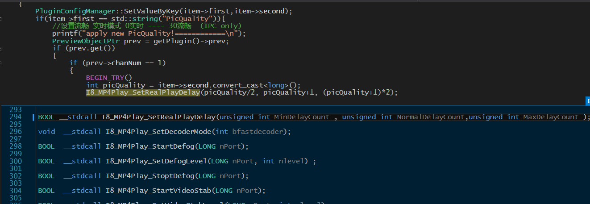

2.2 流程分析
2.2.1 插件的处理流程
NPAntsTestAPI类的构造函数中注册获取注册表的方法
// 获取注册表配置
registerMethod("GetRegConfig",
make_method(this, &NPAntsTestAPI::GetRegConfig));
FB::variant NPAntsTestAPI::GetRegConfig(std::string key)
{
return PluginConfigManager::QueryValueByKey(key);
}
RegeditWrapper PluginConfigManager::regConf;
// 获取逻辑，获取成功返回 获取失败设置默认值返回.
regConf::GetRegValue("PicQuality");
// 设置注册表配置
registerMethod("SetRegConfig",
make_method(this, &NPAntsTestAPI::SetRegConfig));
long NPAntsTestAPI::SetRegConfig(FB::JSObjectPtr obj)
{
...
if (item->first == std::string("PicQuality")) {
//设置流畅 实时模式 0实时 ---- 30流畅
PreviewObjectPtr prev = getPlugin()->prev;
if (prev.get())
{
if (prev->chanNum == 1)
{
BEGIN_TRY()
int picQuality = item->second.convert_cast<long>();
I8_MP4Play_SetRealPlayDelay(picQuality/2, picQuality+1, (picQuality+1)*2);
END_CATCH()
}
}
}
...
}
